템빨 오버기어드 쇼케이스 요약 정리 신작 MMORPG 사전등록 혜택과 출시일
안녕하세요, 영원한도시입니다. 어제 밤(11월 5일) 진행된 템빨: 오버기어드 온라인 쇼케이스 'OVER WORLD'에서 공개된 내용을 정리해 봤어요. 쇼케이스 영상은 공식 유튜브에서 다시 볼 수 있습니다.
원작은 가상현실 게임 '세티스파이'를 배경으로 한 웹소설·웹툰이에요. 정식 출시가 11월 26일 0시라 이제 20일 남짓 남았는데요, 그래서 시스템 정리 뒤에 지금 받을 수 있는 사전등록 혜택까지 한 번에 붙였습니다. 혜택과 이벤트 기간은 바뀔 수 있으니 신청 전에 공식 페이지에서 한 번만 확인해 주세요.
1. 쇼케이스와 출시 일정
템빨: 오버기어드는 넥슨이 퍼블리싱하고 그레이게임즈가 개발하는 MMORPG로, 2026년 11월 26일 0시에 정식 출시돼요.
| 항목 | 내용 |
|---|---|
| 쇼케이스 | 11월 5일(목) 오후 8시, 온라인 'OVER WORLD' |
| 출연 | 그레이게임즈 최병천 PD, 윤순준 디렉터 |
| 정식 출시 | 2026년 11월 26일 0시 |
| 서비스 | 한국·대만·홍콩·마카오, PC·모바일 크로스플랫폼 |
| 원작 | 카카오페이지 웹소설·웹툰 '템빨' (웹소설·웹툰 합산 약 13억 뷰) |
출시 초기에는 한국과 대만·홍콩·마카오를 별도 리전으로 운영하고, 차원 연결과 경쟁도 각 리전 안에서 이뤄진다고 해요. 두 리전이 합쳐지는 합동 콘텐츠는 그 뒤에 예정돼 있습니다.
2. 오버기어드와 오버클럭
게임 이름에 붙은 '오버기어드'가 정확히 뭘까요? 장비 슬롯을 강화해 스탯을 올리고, 돌파로 최대 레벨을 늘리면 봉인돼 있던 추가 스탯까지 열리는 장비 성장 시스템이에요. 이름이 그대로 게임의 중심이라는 게 느껴지네요.
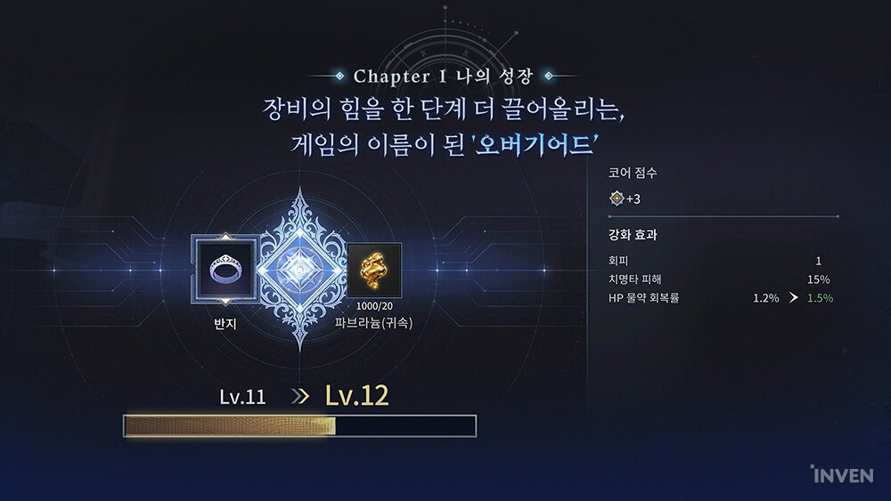
보시면 반지 슬롯이 Lv.11에서 Lv.12로 오르고 강화 효과 수치가 같이 바뀌는 장면이에요
이미지 출처: 넥슨 제공 화면(인벤 보도)
'오버클럭'은 이렇게 쌓은 성장이 한 방으로 터지는 시스템인데요, 장비 성장·등급·연금·감정을 합쳐 계산한 핵심 점수('코어 점수'로도 표기)를 채우면 해금돼요. 일반 공격과 치명타 공격이 적중하면 게이지가 차고, 보스전이나 전장에서 그 게이지를 터뜨리는 방식입니다.
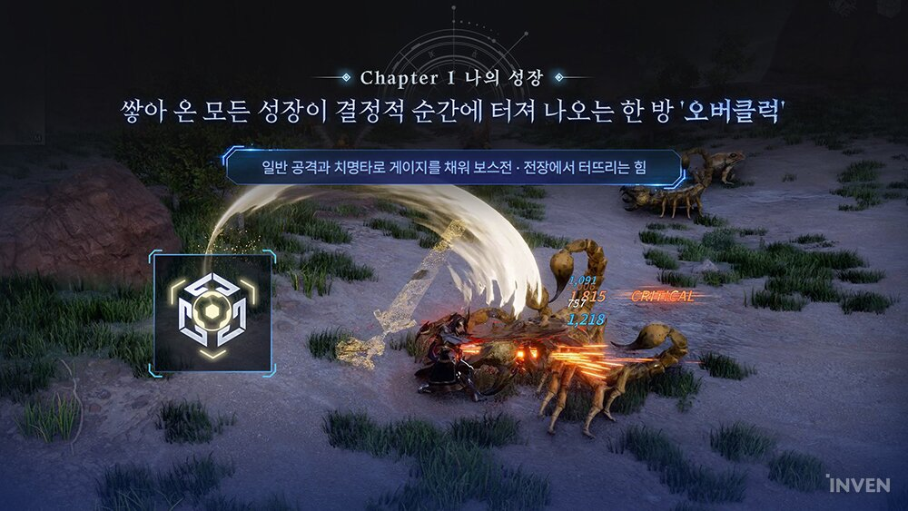
지금 보시는 화면에 '일반 공격과 치명타로 게이지를 채운다'는 문구가 같이 떠 있더라고요
이미지 출처: 넥슨 제공 화면(인벤 보도)
3. 무기 계열과 갓 핸드
무기 계열은 지팡이·대검·활·바이블 4종이 소개됐고, '갓 핸드'는 공격형·방어형·보조형을 하나씩 장착해서 전투를 돕는 장비예요.
인벤 보도에 예시로 나온 클래스는 블러드 워리어와 크러셔인데요, 블러드 워리어는 출혈과 체력 흡수, 크러셔는 끌어당김과 기절이 특징이라고 해요. 무기 유형마다 전투 방식이 달라진다는 설명이 같이 나왔습니다.
갓 핸드는 원작 설정을 가져온 요소예요. 세 유형 중 하나씩 끼우고, 조합은 프리셋으로 저장해 둘 수 있다고 합니다. 저는 이 조합을 짜 보는 재미가 쇼케이스에서 제일 기대되는 부분이에요.
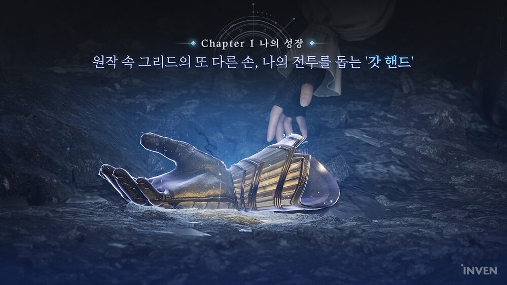
'원작 속 그리드의 또 다른 손, 나의 전투를 돕는 갓 핸드'라는 문구가 그대로 적혀 있네요
이미지 출처: 넥슨 제공 화면(인벤 보도)
4. 무기 개조와 시그니처 장비
내가 만든 장비에 내 이름이 새겨진다면 어떨까요? 시그니처 장비는 제작에서 대성공을 띄워야 얻고, 제작자 이름이 새겨지는 장비예요. 안전 강화 구간이 일반 장비보다 2단계 높고 핵심 점수도 더 얹어 줍니다.
무기 개조는 외형과 성능을 내 입맛대로 바꾸는 시스템이에요. 외형을 바꾸는 것은 물론이고 최대 대미지·치명·명중·상태이상 같은 성능도 선택에 따라 달라집니다.
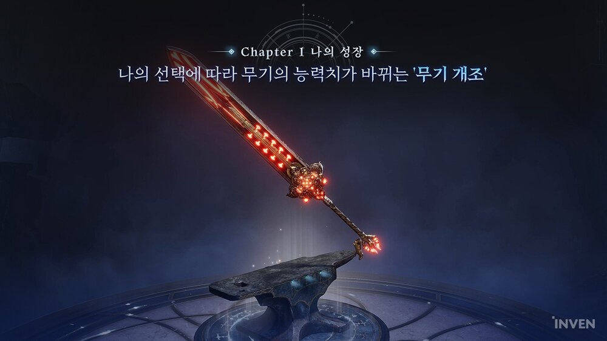
'나의 선택에 따라 무기의 능력치가 바뀌는 무기 개조'라는 제목의 화면이에요
이미지 출처: 넥슨 제공 화면(인벤 보도)
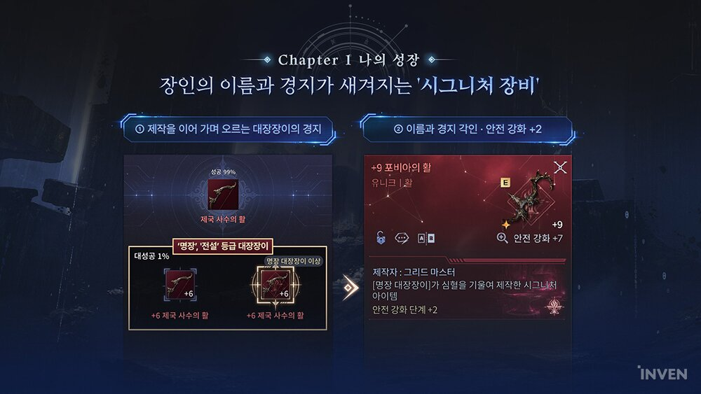
오른쪽 장비 카드를 보면 제작자 줄과 '안전 강화 단계 +2'가 따로 적혀 있거든요
이미지 출처: 넥슨 제공 화면(인벤 보도)
5. 차원(서버) 시스템
템빨: 오버기어드는 하나의 서버를 하나의 차원으로 두고, 처음엔 차원 사이를 오가며 연결되다가 시즌이 열리면 차원 단위로 경쟁하는 구조예요.
- 출시 직후 : 시즌 없이 모든 플레이어가 차원 사이를 오가며 연결돼요. 차원 단위 경쟁은 시즌이 시작된 뒤부터라고 해요.
- 차원 이동 : 일정 수준까지 성장하면 열리고, 소속 서버를 유지한 채 방문하거나 이주로 소속을 바꿀 수 있어요. 이동 비용은 거리에 따라 달라집니다.
- 튜토리얼 시즌 : 공헌도에 따라 공작부터 남작까지 작위가 정해지고, 후작 이상은 파티 버프 액티브 스킬을 받아요. 시즌 세금 재화는 작위자와 기여자에게 나뉩니다.
- 정규 시즌 : 서버 성적을 합산해 상·중·하 디비전으로 나누고, 신규 서버는 일정 기간 보호 그룹에 들어가요.
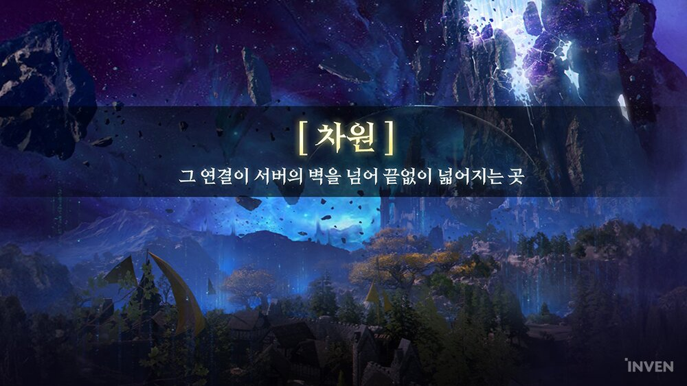
'그 연결이 서버의 벽을 넘어 끝없이 넓어지는 곳'이 차원의 소개 문구예요
이미지 출처: 넥슨 제공 화면(인벤 보도)
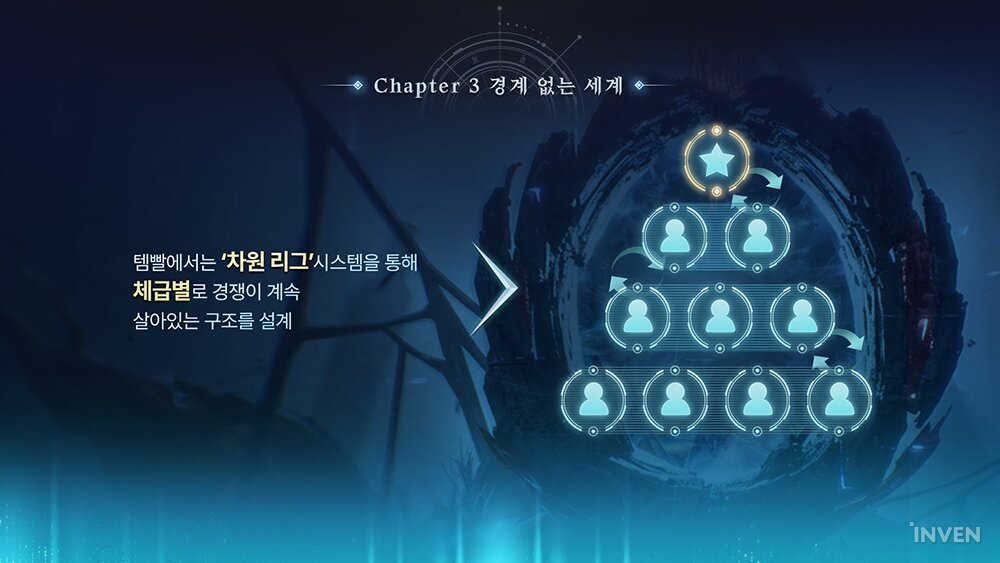
'차원 리그'는 체급별로 경쟁이 계속 살아 있는 구조라고 하네요
이미지 출처: 넥슨 제공 화면(인벤 보도)
차원 이동이 열리는 구체적인 레벨 기준은 보도에서 따로 나오지 않았어요.
6. BM 원칙
과금이 제일 걱정되시죠? 쇼케이스에서 BM은 플레이로도 얻을 수 있는 상품 위주로 설계했다고 소개됐고, 최병천 PD는 확정 판매를 남발하지 않겠다고 밝혔어요.
주요 상품은 클래스 소환, 갓 핸드 소환, 성장 추가 슬롯(성물), 파브라늄과 장비 연금 촉매제인데요, 전부 플레이로도 얻을 수 있다고 해요. 스마트 파티(파티 매칭), 일일 미션, 시간제 던전, 스케줄 모드는 무료로 즐길 수 있습니다.
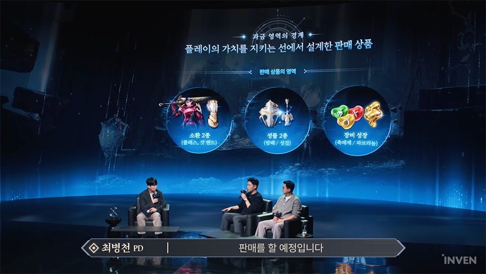
판매 상품이 소환 2종(클래스·갓 핸드), 성물 2종, 장비 성장(촉매제·파브라늄) 세 갈래로 깔끔하게 나뉘네요
이미지 출처: 넥슨 제공 화면(인벤 보도)
PD는 불편함을 돈으로 풀게 만들지 않는 걸 기본값으로 두려 했다는 취지로 말했어요.
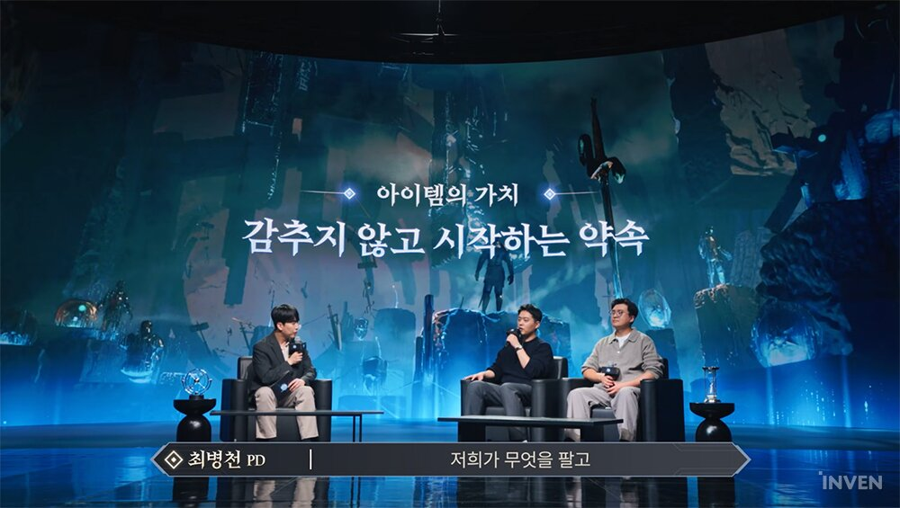
'아이템의 가치, 감추지 않고 시작하는 약속'이라는 문구가 뜬 좌담 구간이에요
이미지 출처: 넥슨 제공 화면(인벤 보도)
'템빨 코인'은 협력 플레이·히든 퀘스트·차원 콘텐츠로 모으고, 전용 상점과 펫, 상위 등급 장비(확률형 유니크 드롭)에 쓰는 재화로 소개됐어요. 개인적으로는 장비 성장이 중심이고 제작자 이름이 새겨지는 시그니처 장비에 확률형 유니크 드롭까지 있어서 아이템 가치에 기대를 걸 만한 구조라고 보는데요, 거래나 현금화 얘기는 아직 나오지 않아서 지켜봐야 하죠.
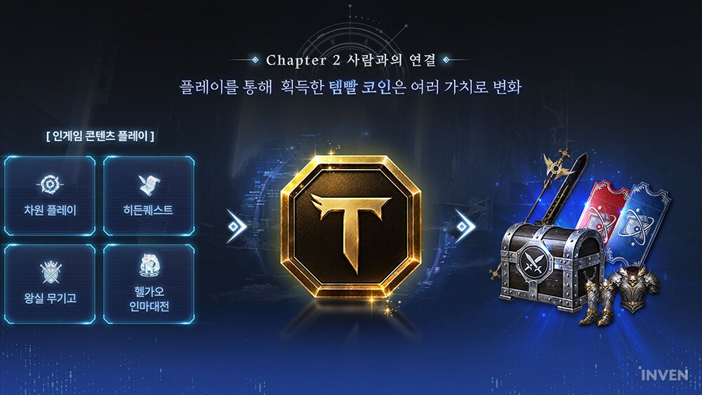
플레이로 모은 템빨 코인이 여러 가치로 바뀐다는 도식이네요
이미지 출처: 넥슨 제공 화면(인벤 보도)
7. 6개월 로드맵
출시 뒤 6개월 동안은 뱀파이어 도시와 인마대전으로 시작해 헬가오와 일일 던전, 3개월 차 대규모 업데이트, 공성전 순으로 콘텐츠가 이어질 예정이에요.
| 시기 | 주요 콘텐츠 |
|---|---|
| 오픈 직후 2주 | 뱀파이어 도시, 인마대전 |
| 1~2개월 | 헬가오 레이드, 일일 던전 |
| 3개월 | 첫 대규모 업데이트 : 사하라 2영지(타이탄), 신규 에피소드, 공성전 |
| 4~6개월 | 라인하르트 골렘 침공전, 뱀파이어 2번 도시, 신규 무기 계열 |
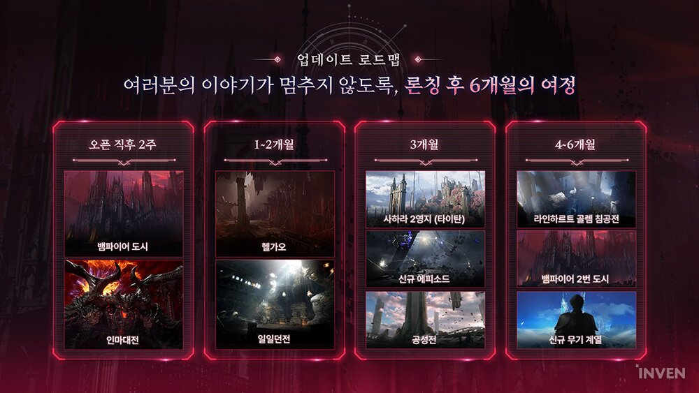
오픈 직후 2주부터 4~6개월까지 네 칸이라 한눈에 들어오네요
이미지 출처: 넥슨 제공 화면(인벤 보도)
헬가오 레이드는 코크로 섬이 무대인데요, 혼자서도 돌 수 있고 파티로 가면 더 빠르다고 해요. 인마대전은 서버 전체가 협력해 지옥의 틈에서 쏟아지는 마물을 막고 '바알의 사념체'를 공략하는 레이드입니다.
8. 사전등록과 혜택
사전등록은 10월 1일부터 별도 안내 시까지 진행되고 있어요. 참여는 어렵지 않아서 공식 사전등록 페이지에서 사전등록을 하고, 카카오에서도 사전등록을 한 다음, 공식 유튜브를 구독하고 카카오 채널을 친구로 추가하면 추가 보상까지 챙길 수 있어요. 캐릭터명과 서버를 미리 잡아 두는 사전선점은 아래 링크(9절)에서 따로 진행됩니다.
- 이벤트 2종 : '미지로 향하는 길'과 '도전! 전설의 대장장이'가 열려 있어요. 갓 핸드 장비와 칭호 등이 보상으로 소개됐습니다.
- 사전등록 보상 : '꽃잎 토끼'(동행 펫)를 받아요.
- 카카오 사전등록 : 경품 응모 대상이고, 경품으로 지포스 RTX 5080 그래픽카드가 소개됐어요.
- 공식 유튜브 구독·카카오 채널 친구 추가 : 골드, 사냥 지원 상자, 제작 재료 확정 상자를 받는다고 해요.
9. 캐릭터명·장비 선점 이벤트
공식 페이지와 보도에 따르면 출시 전에 캐릭터명과 서버를 미리 잡아 두는 캐릭터명·서버 사전선점 페이지가 10월 21일부터 열렸고, 장비 제작까지 미리 해 볼 수 있는 방식이 눈에 띄는 프로모션이에요.
이름은 전 서버를 통틀어 중복이 안 되고 계정당 1개만 잡을 수 있어요. 초기 서버가 약 6시간 만에 마감돼서 추가 선점이 열렸고, 총 20개 서버가 됐더라고요. 장비 사전 선점은 참여권으로 재료를 조합해 장비를 만들고 성공 단계에 따라 장비 선택 상자를 받는 이벤트입니다.
레어 캐릭터명은 '파그마의 비밀 경매장'에서 입찰하고, 낙찰되면 이름 적용 주문서를 받아요.
▶ 같이 보면 좋은 글
· 템빨 오버기어드 사전등록 프리뷰 모바일 MMORPG 게임
참고한 곳
· 템빨: 오버기어드 공식 사전등록 페이지
· 템빨: 오버기어드 캐릭터명&서버 사전선점 페이지
· 공식 공지, 온라인 쇼케이스 'OVER WORLD' 스트리밍 안내
· 공식 유튜브, 온라인 쇼케이스 OVER WORLD
· 인벤, 템빨 오버기어드 쇼케이스 기사
· IPNN, 쇼케이스 보도
· 파이낸셜뉴스, 사전등록 보도
· 위키트리, 캐릭터명 선점 보도